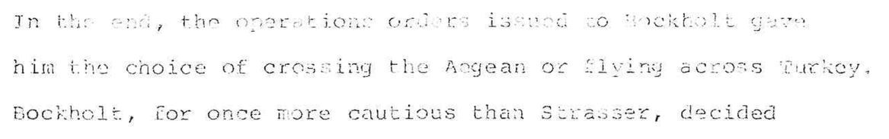

Reading edition & archive
The China Affair

Recovered as
In the end, the operations orders issued to Bockholt gave him the choice of crossing the Aegean or flying across Turkey. Bockholt, for once more cautious than Strasser, decided…
Typescript page 151, a carbon copy. The machine read it at 84% confidence and lost whole words — it is one of seven pages that had to be transcribed by hand from the image.
In November 1917 the German naval airship “L 59” was loaded with medical supplies, ammunition and mail, and ordered to fly from Bulgaria to German East Africa — four thousand miles, without landing, to reach a colonial army that was already losing. This is the history of that operation, written decades later by a man who went through the German records and the British ones.
The typescript ran to 267 pages and was never published. It survives as a scan with no text layer: a photograph of paper. This edition is the text recovered from those images, together with a full account of what was changed to get there and what was deliberately left alone.
The book
Read the book
Fifteen sections, 67,914 words, 31 of the author’s footnotes. Searchable.
Begin at the prologue
Afternoon tea in Africa, November 1917: a German commander takes tea with the men who have just captured him.
How the text was made
The archive
The method, the code, and the evidence for every judgment.
Corrections
Every change to the raw machine reading, with the page it was made on.
What was left alone
The author’s own spellings and typing errors, and how they were told apart from the scanner’s.
Verification
How the result was checked for text that went missing without trace.
This edition in figures
- Typescript pages
- 267
- Words
- 67,914
- Corrections
- 254each checked against the page image
- Pages retyped
- 7too faint to read by machine
- Words supplied
- 1a word struck through by hand, the correction above it illegible
Downloads
The same text as a Word document in standard manuscript format, plain text, or Markdown.
The complete working archive — the pipeline, the input files, the reconstructed manuscript as JSON, and every evidence crop — is a 5 MB zip.
Text © Ernest Walton, 1982. This edition sets out its own workings so that a reader can check them; corrections and queries are welcome.